In this guide, we're going to talk about subfolders. But actually, we're going to explore a little more than that as well. If you've installed a lot of ghosts/balloons/etc., you may find it hard to find what you want in the lists after a while. But thankfully, SSP has a solution! You can set up a system of folders to sort your ghosts/balloons/etc. into, and they will be separated in the the list! Once you know how to do it, it's easy and effective. This guide is specifically going to talk about ghosts at first, but this will apply to balloons, headlines/rss, and plugins as well.
First of all, you will need to navigate to where you have SSP installed. Inside of SSP's folder, there should be a folder called ghost. That folder will have all of the folders for your individual ghosts inside.
As you can see, there are 4 ghosts installed in this example, and they're all stored in the same folder. In order to install ghosts in multiple folders, we will need to open the preferences and go to the Folder tab.
Here, you will see multiple boxes, each for different types of things you can install. For now, we will focus on the top box, labelled Ghost. There are a few options there. Right now, what we want is the "Edit..." button. This will open a new window called the Directory Settings, which shows what folders SSP is looking for ghosts in.
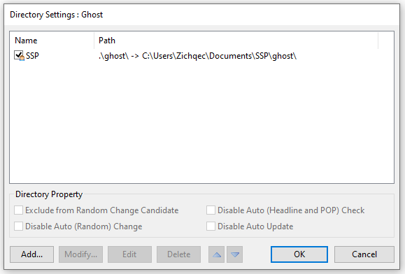Right now, there is only the default ghost folder that SSP comes with by default. In order to add a new one, you'll want to click on the "Add..." button in the bottom left. This will open Windows Explorer, which will allow you to select any folder in any location you want! I will note, I'm going to use this to create subfolders within the main ghost folder, since I think that's what makes the most sense for this kind of organization. But in theory you could have ghost folders in different locations if you wanted.
So, what I'm going to do is navigate to the ghost folder in the explorer window, then right click to make a new folder. You should make the name of the folder something that describes the ghosts within it, because this is the name that will show in the menu. I'm going to call this one "dev", because I'm going to put ghosts that I've worked on in it.
Now that I have made the folder, I'm going to go inside of it, and then click on the "Select Folder" button.
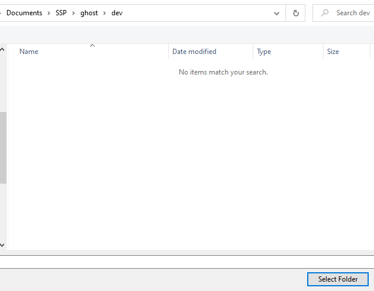Tada! Now the new folder shows up in the directory settings! Make sure to click OK on the window to save your changes. You'll see your subfolders appear in your change ghost and call ghost menus now!
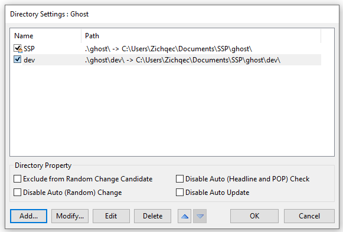So now we have a subfolder, but none of the ghosts are actually in it. How do we change that? There are a few ways we can move things around.
The best way to move ghosts is via the ghost explorer. By moving them this way, SSP will know that the ghost was moved, not just reinstalled, and so it will preserve your ghost usage statistics. You can open the ghost explorer through the utilities menu (the option is labelled "Explorer"), or simply by clicking on a ghost and pressing Ctrl + E.
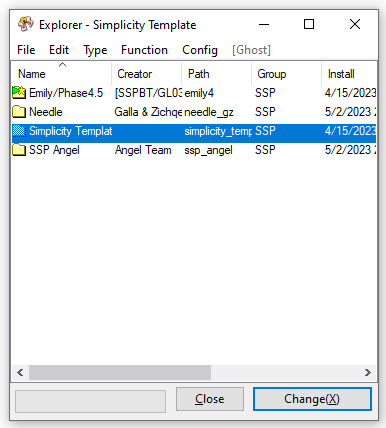This little window is very powerful! But that's a topic for another guide. Seriously, take some time to play around with the ghost explorer and see what you can do. For now, though, we want to move a ghost.
To move a ghost is simple. The ghost must be closed, and then you can right click on its entry in the explorer and hover over the "Move To..." option. This should present you with a list of your current subfolders, and you can simply select the one you want! Note that the default SSP/ghost/ folder will be labelled as "SSP". I'm going to move Needle to the "dev" folder.
Now that I've done this, you'll see that Needle's folder is showing in green, instead of the yellow that the others have. It's a bit subtle but I promise it's there.
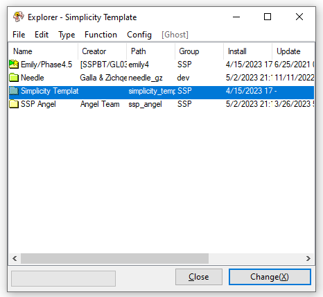As you add more subfolders, you'll see them appear in slightly different colors, to help differentiate them at a glance. You'll also see that in the group column, Needle says "dev" instead of "SSP"! And if we go to the change ghost menu...
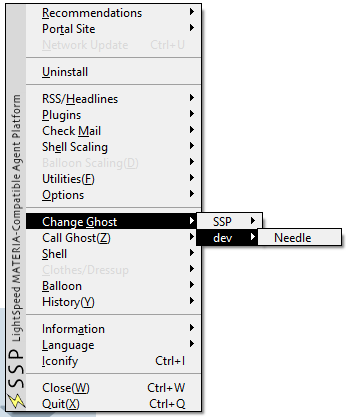Tada! It's like magic.
You can select multiple ghosts in the ghost explorer to move at once, by the way! But try not to do too many at once, or SSP may crash. It will generally give you a warning message if it thinks you are selecting too many at the same time.
If you're having trouble with the ghost explorer, you can always just use windows explorer as well. This is useful if you want to move a lot of ghosts at once, and it's too many for SSP to handle. You can simply move the folders of your ghosts into whatever directories you've set up. You can either close SSP before you do this, or, if we go back to the Folder tab of the preferences window, you can just click on the handy "Reload" button when you're done moving stuff around, and it will reload the list of ghosts. (This is also handy if you ever have to manually install a ghost and you don't want to close SSP!)
The trouble with moving ghosts this way is that SSP won't know that you've just moved stuff around, rather than installing new things. So, you may end up with duplicate ghosts in your usage statistics, and such. But if you're not fussed about that, then it's a perfectly viable method.
Alright! Now you've got your subfolders set up, great! ... But, every time you install a ghost, it just puts it into the default "SSP" folder. That's kind of annoying, isn't it? Then you have to wait until you close the ghost in order to be able to move it around. What a pain!
Thankfully, there's a great solution! You can tell SSP to prompt you which folder you want to install a ghost in, every time you install! This makes it a breeze to stay on top of your organization. Lets go back to that preferences window, and have a look at those other options we skipped before.
"Select Install Destination Directory" is the option we want right now. This means that, whenever you install a ghost, it will ask you which folder you wish to install it in. There are some interesting things to know about this option, so we'll go over those quickly.
First of all, let's try installing a ghost now! Here's what the window looks like when I do that.
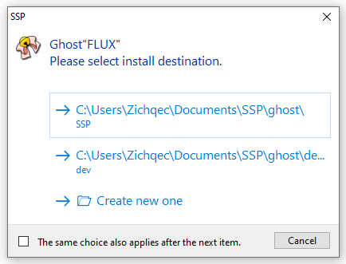There are my folders! I can simply click on which one I want, or I can even click to create a new one, if I don't like my current options.
If you decide that you don't want to install the ghost after all, you can also cancel the installation with the "Cancel" button in the bottom right corner.
Do you see also, the tick box at the bottom? "The same choice also applies after the next item.". This tick box is useful if you're installing multiple ghosts at once! If you tick this box, then everything else that is installed after the current item will be installed into the same folder that you chose. Really handy for events like Ghost Masquerade, where you may be installing 70+ ghosts at a time!
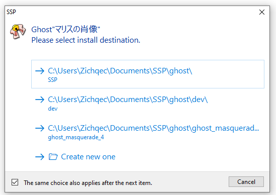One more thing to note, before we move on. Sometimes you want to install a new version of a ghost over an old version, or otherwise overwrite an old installation. When you're using this prompt option, if it sees you are installing a ghost that you already have installed in a subfolder somewhere, it will use a little ghost emoji to signify this! Here is what it looks like if I try to install Needle again. There's a little ghost by the option for the "dev" folder, to tell me that I've already got Needle installed there. Note that any folders Needle is already installed in are bumped to the top of the list, so that they're more visible.
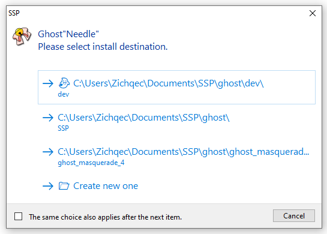Ok, you're getting to be a pro at this now! But there's still a few more things we can do, if you're interested.
Let's say you've gone and installed a whole ton of ghosts, such as all of the ghosts from the ghost masquerade events! ... But now, you've got hundreds of ghosts installed, and SSP takes forever to load up. What can you do? Well, if you've got a subfolder of ghosts that you're not using, or you don't use often, you can simply tell SSP to ignore that subfolder. Let's go back to the Folder tab of the SSP preferences. You'll notice that now it says "Recognized Elements" is 75. This is the number of ghosts that are installed.
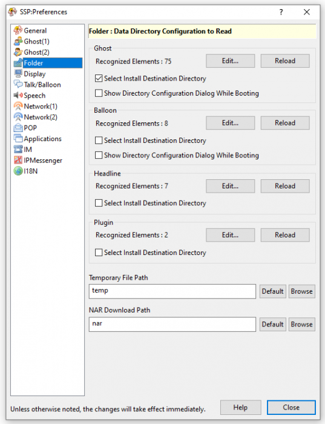Let's click on that "Edit..." button again to bring up the directory settings.
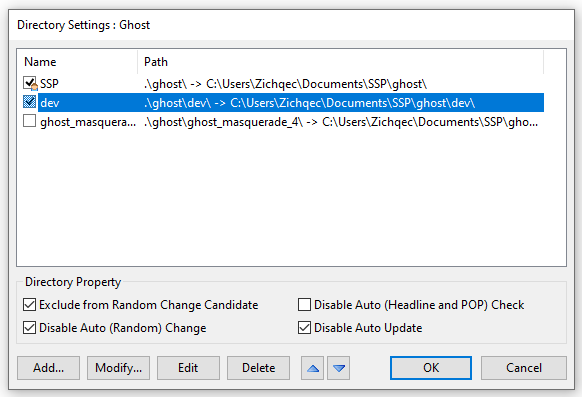Do you see how each subfolder has a little tick box next to it? If you want to temporarily tell SSP to ignore a folder, you can simply untick the box for it! The ghosts will still be there, and your setup for the folder will be there, but SSP won't load anything in it until you tick the box again. So, if I untick the box for my ghost_masquerade_4 folder and click the "OK" button...
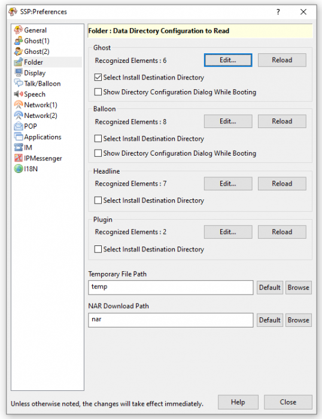Tada! My number of recognized elements is back down to 6. Much faster to load.
If you want, you can also tick that little box that says "Show Directory Configuration Dialog While Booting". This means that every time SSP starts, it will ask you which folders you want to load, before it loads them. Handy if you need to change these settings a lot!
Alright, let's have another look at those directory settings.
You may have noticed some little tick boxes on the bottom of that window! These are fairly self explanatory, but still deserve highlighting. For example, with the "Disable Auto Update" box, you can disable SSP's auto update feature for specific subfolders. This is useful if you're a ghost developer and you don't want your own ghosts updating and having your hard work overwritten! Note that this is specifically for SSP's auto update checks that can be configured in the preferences; it won't stop you from accidentally triggering a manual update.
The "Disable Auto (Random) Change" option is similarly useful for developers. SSP has a feature where it can swap ghosts out for you automatically at specified intervals, and by toggling this option, it means that you can make ghosts you're developing not be randomly swapped out on you!
The "Exclude from Random Change Candidate" option is in the same vein. This is useful if you want your ghosts to swap out randomly, but you want to leave certain ghosts out.
Finally, there is the "Disable Auto (Headline and POP) Check", which refers to the automatic checks of RSS feeds and headlines that you can configure SSP to do. I'm not certain exactly why you'd want this option, but it is there if you want it. Perhaps if you have a selection of ghosts that don't have useful dialogue for those options? Whatever suits your needs, really.
Besides the tick boxes, there are a few other things too! You can manually sort your list of subfolders with the little arrows at the bottom. Also of note are the "Modify..." and "Edit" buttons. The "Modify..." button will let you modify a subfolder on the list by opening windows explorer and navigating to a new place. The "Edit" button appears to do similar, by letting you write the file path manually, but I am not certain if there's anything else different about the behavior, there.
And of course, there is also a "Delete" button, if you wish to remove a subfolder from your list entirely. This will delete SSP's knowledge of the subfolder, but not the subfolder itself or any of its contents.
Ok, so I mentioned before, this works for more than just ghosts! On the Folder tab of the SSP preferences, you'll see that there are also boxes for Balloon, Headlines (which is also RSS feeds), and Plugin. They work the same way as the ghost options! Personally, I have mine set up to also ask me where I want to install balloons, since I have those in subfolders also. But you can set these however you like!
I will make one special note if you're like me and set up balloons to prompt for an install destination. When you install a ghost that has a balloon, it will first prompt for where to install the ghost, and then where to install the balloon. If you click "Cancel" on the balloon's prompt, it will only cancel installing the balloon, not the ghost! This can be really handy if you're overwriting a ghost's directory or something.
Ok! Now that you're a subfolder expert, I'm going to give some ideas on what kinds of subfolders I find handy.
First of all, I absolutely recommend making subfolders for events! I've got subfolders for all of the ghost jam events, as well as the ghost masquerade events. This makes it easy to toggle off large portions of my ghost list that I may not be using, if my SSP is too bogged down. And, it's nice to be able to quickly see how many ghosts were in each event, and such!
Secondly, if you're a developer of more than one ghost/balloon/etc., do yourself a big favor and create yourself a dev folder. It's super nice to have all your work organized into one folder.
If you're a ghost developer, you may also want to consider making a subfolder for any templates that you have installed! This was something I only did recently, but I'm really enjoying it, because now I can look over all my template options at a glance, and I know where to quickly find them all when it comes time to start a new ghost.
You may want to consider making subfolders for your most commonly used ghosts, or maybe separate out ghosts that you've installed for study, or ghosts that are still in beta testing and need to be kept secret, or any number of things! Organize however you like, the sky's the limit.
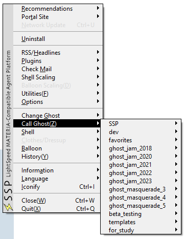